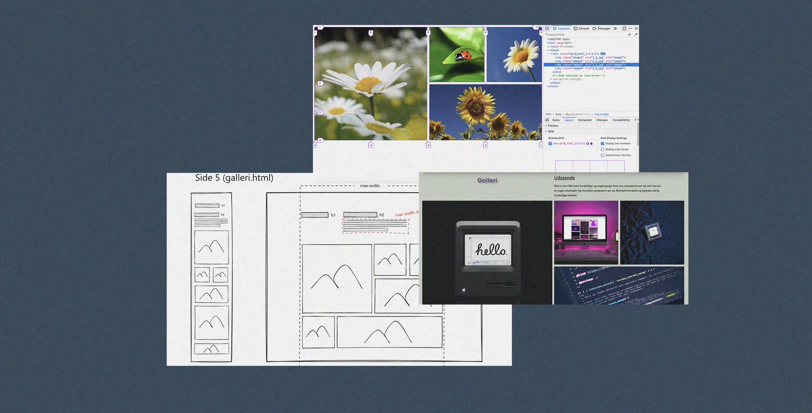

Portfolio
Tema 2
HTML og CSS:
Vi blev introduceret til opbygning af websider med HTML og CSS i Visual Studio Code. Gennem praktiske øvelser skabte vi enkle websites med layouts og grid til strukturering.
layout diagram
Vi lærte hvordan man anvender grid til at skabe strukturerede layouts. Ved hjælp af layout diagrammer blev grundlæggende principper og teknikker for grid implementeret.
Billedeformat
Vi undersøgte forskellige billedeformater såsom webp, png, jpg, gif og svg og deres anvendelser i webudvikling. Praktiske øvelser omfattede billedbehandling og optimering til web.
Tema 3
Research og Designvalg:
Vi startede med at lave research og ideudvikling, vi lavet tankekort og undersøgte hvad der allerede findes på internettet for at finde et koncept. Jeg researche meditations, spa, hotel og andre velvære sites. Og endte op med at vælge en moderne stil med bløde, duse farver som blå, beige og hvid. Typografien var elegant og letlæselig, hvilket sammen med de behagelige billeder skabte en rolig og indbydende atmosfære.

Figma og Prototyping:
Vi lærte at bruge Figma til at designe og prototype brugergrænseflader. Gennem praktiske øvelser oprettede vi wireframes, mockups og interaktive prototyper, hvilket gav os mulighed for at visualisere og teste vores designs.
UX/UI:
Vi fokuserede på brugercentrerede designmetoder og principper. Ved at studere brugeradfærd, udføre brugerresearch og gennemføre forskellige tests som 5-sekunders test, tænkehøjt test, BERT-test og Lighthouse test, sikrede vi, at vores designs opfyldte brugernes behov og forventninger.
Tema 4

Design i Adobe Illustrator:
Vi anvendte Adobe Illustrator til at designe spilelementer og grafik. Gennem brug af Illustrator's værktøjer lærte vi at skabe vektorgrafik og anvende designprincipper som rule of thirds for at skabe dybde i vores designs. Jeg valgte en stil baseret på kawaii-designelementer med bløde pastelfarver og håndskrift-lignende typografi for at skabe et indbydende brugerinterface.
CSS-Animationer:
Gennem brugen af CSS-animationer tilføjede vi bevægelse og liv til vores spil. Ved at eksperimentere med keyframes, transitions og transform skabte vi forskellige animationseffekter for at forbedre brugeroplevelsen.

JavaScript Spiludvikling:
Vi blev introduceret til JavaScript for at udvikle interaktive og dynamiske spiloplevelser. Vi brugte event listeners til at oprette handlinger, såsom at starte spillet ved klik på en knap: Vi implementerede funktioner til at håndtere klik på gode og dårlige objekter, opdatering af point og liv samt stop af spillet ved game over
Tema 5
passionssite
Storyboard:
Vi arbejdede med storyboarding for at planlægge vores videoer. Dette inkluderede at skitsere scener og lave en klar plan for optagelserne, hvilket skulle hjelpe os med at strukturere vores indholdsproduktion.
Interview, Video og ekstern Mikrofon:
Optagelse af lyd med ekstern mikrofon var en vigtig del af projektet. Vi gennemførte interviews og brugte mikrofoner til at fange klar og skarp lyd, hvilket forbedrede kvaliteten af vores video.

Adobe Premiere Pro:
Vi blev introduceret til Adobe Premiere Pro for videoredigering. Her lærte vi at klippe og redigere vores interview, tilføje b-roll, erstatte lyden fra hovedinterviewet med eksterne lydklip for at opnå bedre lydkvalitet, tilføje overgange og effekter, samt justere lydniveauer. Vi brugte også Adobe After Effects til at skabe animationer, som vi integrerede via LottieFiles
Virksomhedssite

Redesign projekt
Vi redesignet en virksomheds website. Vi brugte Figma til at samle af research på et sted hvor vi alle havde tilgang, slik at vi kunne udforme layouts og struktur af virksomhedens hjemmeside visuelt. Det var sjovt at arbejde sammen om et fælles projekt. Vi brugte Trello til at strukturere vores plan, opgaver og to-do-lister.
HTML og CSS
Implementering af designet blev gjort med HTML, CSS og JavaScript. Vi lærte at implementere variabler og forms. og vi blev introduceret til Git og Github.
Git og Github:
Vi brugte GitHub for at samarbejde effektivt på projekter i et team og slik at vi kunne kode samtidig. Dette var sværere end vi forventet, og vi havde en del udfordringer med det, men vi fandt ud at der var lavet flere branches og forks som blev løst ved hjælp af ekspert hjælp.